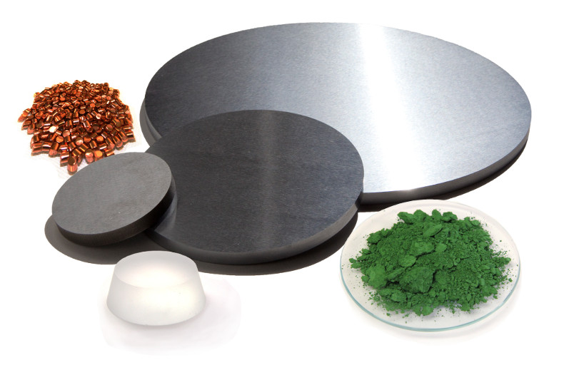

LTS manufactures ultra-high purity compounds for opto-electronic applications. LTS offers a wide variety of optical coating materials suitable for vacuum deposition processes. Specializing in sputtering targets, coarse and fine powders, granules, pellets, and cone and crucible inserts, LTS can produce materials in almost all inorganic compositions and a range of purities.
Check out some of our highlighted material selections:
Since 1992, LTS has been producing mil-spec compliant fluoride materials using the Direct Fluorination Method (DFM). LTS produces the highest quality fluorides available in the industry: Our novel DFM process allows for the production of extremely pure compounds with superior deposition properties.
Fluoride compounds produced via hydrofluoric acid (HF) reactions have impurities in the precipitated compound which are not easy to purify out.
The Direct Fluoridation Method (DFM) is a specialized process defined by a high temperature plasma phase reaction of two or three components to increase the purity, viscosity, and consistency of the material. Then, secondary melting in fluorine gas atmosphere compensates for fluorine stoichiometry deficiencies.
The process is costly, cumbersome, and occasionally non-deployable in the cases of scandium fluoride (ScF3), aluminum fluoride (AlF3), cryolite (Na3AlF6), and a few other Rare Earth solutions of fluorides. LTS employs the DFM process in its production of ultra-high purity fluorides such as LaF3, GdF3, NdF3, LiScF4, CaF2, and MgF2 production for DUV-NIR applications, as well as YbF3, YF3, BaF2, CeF3, and our thorium fluoride (ThF4)replacement chemicals, solid solutions of YBC fluorides for IR applications.
The process effectively removes contaminants as well as trapped gases. The result is a significantly purer material that undergoes faster, cleaner deposition and ultimately provides a better optical coating.
YBC DFM is a highly preferred category of low-index materials transparent from the NIR to IR regions of the spectrum. YBC DFM materials are recommended for multilayer coatings in AR applications in the 2,000-12,000 nm region, including AR, bandpass, and dichroic filters. They are also suitable for laser coating applications.
YBC-375: The stoichiometry of this material has been optimized for easy deposition onto Ge and ZnSe substrates, making YBC-375 highly suitable for All IR and CO2 laser component applications.
YBC-905: The stoichiometry of this material has been optimized to form a superior durable coating onto the substrates used in the CO2 laser applications; however, a high quality deposition is more difficult to achieve than with YBC-375. In addition, YBC-905 cannot be used in high humidity environments or applications around the 3.8 and 5.6 micron range as it has absorption bands in that region of the spectrum.
YBC-907: The stoichiometry of this material has been optimized for extremely low absorption in NIR/IR applications. It is mildly toxic but outperforms radioactive thorium fluoride, making YBC-907 the superior material for use in CO2 laser component films.
Non-radioactive Thorium Fluoride IR-coating replacement
View optical and deposition data.UV/DUV Fluorides:
Lanthanum Fluoride LaF3
Neodymium Fluoride NdF3
Gadolinium Fluoride GdF3
Aluminum Fluoride AlF3
Erbium Fluoride ErF3
Cryolite Na3AlF6
Mid-index Fluoride solutions:
Scandium Fluoride ScF3
Lithium Fluoride LiF
NIR/IR Fluorides:
Yttrium Fluoride YF3
Ytterbium Fluoride YbF3
Dysprosium Fluoride DyF3
Cerium Fluoride CeF3
DFM grade fluoride materials for high quality and fast deposition in UV, mid-range, and IR thin film coatings.
View optical and deposition data.
Hafnium Oxide HfO2
Usable Spectrum: 224 nm - 8 µm
Index: 2.0 @ 500 nm
Scandium Oxide Sc2O3
Usable Spectrum: 250 nm - 8 µm
Index: 1.8 @ 500 nm
Zirconium Oxide ZrO2
Usable Spectrum: 230 nm - 7 µm
Index: 2.0 @ 500 nm
Scandium oxide is a high laser damage threshold optical coating material for use in UV laser applications at 337 nm and 248 nm. It has a LDT of >6 J/cm2 as well a moderately high index of refraction of ~1.8 at 550 nm. It is durable and has good adhesion promotion.
These properties make Sc2O3 a valuable antireflection / high-reflection and multilayer coatings material for ultraviolet applications as well as visible and infrared.
Unfortunately, due to its ores’ rarity, scandium oxide is also very expensive.
For this reason, LTS has developed scandates with similar or better optical properties that are cheaper and more accessible to the medium budget user. These are based on compounding scandium oxide with other rare earth oxides to form ternary compounds with less than half the scandium content but equivalent optical properties, including higher density and refractive index.
YBC-375: The stoichiometry of this material has been optimized for easy deposition onto Ge and ZnSe substrates, making YBC-375 highly suitable for All IR and CO2 laser component applications.
YBC-905: The stoichiometry of this material has been optimized to form a superior durable coating onto the substrates used in the CO2 laser applications; however, a high quality deposition is more difficult to achieve than with YBC-375. In addition, YBC-905 cannot be used in high humidity environments or applications around the 3.8 and 5.6 micron range as it has absorption bands in that region of the spectrum.
are Earth Scandates:
Gadolinium Scandate GdScO3
Yttrium Scandate YScO3
Hafnium Scandate HfO2-Sc2O3
View optical and deposition data.Hafnium is a lustrous, silvery, ductile metal that resists corrosion by forming a tough, impermeable, oxide film on its surface; it is unaffected by alkalis and acids, with the exception of hydrofluoric acid (HF). Hafnium exists in nature in all minerals containing zirconium, but because of their similar properties, hafnium and zirconium are not easily separated. The removal of hafnium begins with a liquid-liquid extraction process where one of the end products is hafnium chloride. Pure hafnium metal is finally evolved when the hafnium chloride is reacted with a tetrahalide material and magnesium at 1,100°C.
Hafnium is an excellent material for neutron absorption in control rods used in nuclear power plants; it is also used in the recrystallization of tungsten filaments.
LTS offers high purity hafnium metal in a wide variety of sputtering target geometries and evaporation forms including powder, pellets, and pieces. These materials are fabricated with electron beam melting - the hafnium metal is melted layer by layer with an electron beam under a high vacuum. The employment of this technique allows for the manufacture of hafnium products with exceptionally low quantities of intrinsic gases, a property highly sought after in the industry.
View the standalone brochure.Hafnium oxide, HfO2, is a high-index, low-absorption material used for coatings in the near-UV (below 230 nm) to IR (8,000 nm) regions of the spectrum. Films of hafnium oxide are combined with layers of silicon dioxide to form index-contrasting multilayer structures with high damage thresholds at 350 nm. The material is supplied in compact form as tablets and powders with few metallic impurities.
HfO2 is used in UV laser multilayer coatings, IR mirror coatings, emitter wire coatings, achromatic beam splitting, and protective, polarizing, and dielectric coatings from the UV to medium IR region of spectrum (200-8,000 nm).
Ultra high purity HfO2, introduced by LTS, possesses unique characteristics: HfO2 (produced via LPF) shows absorption below 224 nm and has a high packing density. Compared to other commercially available hafnium oxide products, our hafnium oxide also exhibited the highest Laser Damage Threshold (LDT), therefore making it more useful for excimer lasers applications. Our HfO2 is also completely outgassed and requires ⅓ less time in preconditioning for deposition. LTS also manufactures chemically reduced versions of hafnium oxide conical inserts in various sizes for Telemark and Temescal liners; we also produce these materials in evaporant forms such as pellets, pieces, and discs.
View the standalone brochure.Semiconducting chalcogenide glasses, first produced in the late 1950’s, are normally classified as large covalently bonded network solids that act as a single molecular complex. They exhibit some unique optical and electrical properties.
These properties make them promising candidates for modern technological applications. Specifically, ultrafast broad-band response times, tunable third order nonlinear refractive indices, and optical band gap energy make these materials useful for IR detectors, lenses, optical fibers, and photonic integrated circuits.
Chalcogenide glasses undergo thermally driven phase transitions, also giving them widespread use in rewritable CD and DVD memory technologies. In addition to current storage technology, they are also used in emergent Phase-change Random Access Memory (PRAM) development. An electric current pulse supplies the necessary heat to trigger the glassy-crystal phase transformation from amorphous to crystalline. The read-out is performed by utilizing the relatively big differences in electrical resistance of the two phases. The crystalline region may be transformed back to the glassy state by a brief exposure to local heat followed by rapid cooling. These processes take only nanoseconds.
Semiconducting chalcogenide glasses are normally classified as large covalently bonded network solids that act as a single molecular complex. The glass GexAsySe(1-x-y) is categorized into three groups. Groups 1 and 2 consist of tetrahedral GeSe4 and pyramidal AsSe3 configurations, where the Se atoms can adequately bond to all of the Ge and As atoms. Excess Se atoms form (Se-Se)n chains where n2 and 2 in groups 1 and 2, respectively. Group 3 glasses have Se vacancies that are balanced by the formation of "defect" Ge-Ge and As-As bonds.
LTS aspires to become the leading source for high-purity precision materials of the present and future technologies that power our world.
LTS aspires to become the leading source for high-purity precision materials of the present and future technologies that power our world.
LTS aspires to become the leading source for high-purity precision materials of the present and future technologies that power our world.
LTS aspires to become the leading source for high-purity precision materials of the present and future technologies that power our world.
LTS aspires to become the leading source for high-purity precision materials of the present and future technologies that power our world.
LTS aspires to become the leading source for high-purity precision materials of the present and future technologies that power our world.
LTS aspires to become the leading source for high-purity precision materials of the present and future technologies that power our world.
LTS aspires to become the leading source for high-purity precision materials of the present and future technologies that power our world.
LTS aspires to become the leading source for high-purity precision materials of the present and future technologies that power our world.